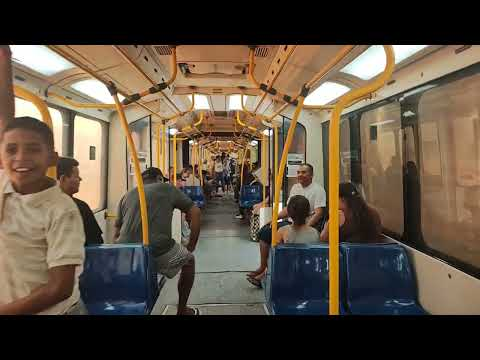
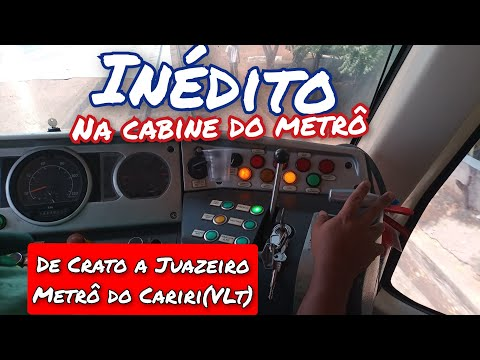

Sentido Fátima
Saindo de Crato
| Primeiro | Último | |
|---|---|---|
| Segunda a sexta | 06:05 | 19:05 |
| Sábado | 06:05 | 12:50 |
| Domingo | sem operação | |
Nos dias úteis, passa a cada ~46 min no pico, ~90 min no resto do dia.
VLT · Cariri
Fátima - Crato
9estações
~40 minde ponta a ponta
26viagens por dia útil
R$ 1,00passagem
Passagem: R$ 1,00 (meia R$ 0,50) · cartão eletrônico a partir de nov/2026; confira na bilheteria.
Saindo de Crato
| Primeiro | Último | |
|---|---|---|
| Segunda a sexta | 06:05 | 19:05 |
| Sábado | 06:05 | 12:50 |
| Domingo | sem operação | |
Nos dias úteis, passa a cada ~46 min no pico, ~90 min no resto do dia.
Saindo de Fátima
| Primeiro | Último | |
|---|---|---|
| Segunda a sexta | 06:00 | 19:00 |
| Sábado | 06:00 | 13:30 |
| Domingo | sem operação | |
Nos dias úteis, passa a cada ~46 min no pico, ~90 min no resto do dia.
Horários mais cheios: das 6h às 8h e das 16h às 19h (Relatório de Demanda do Metrofor, 2025).
Domingo: o metrô e o VLT só circulam em dias especiais (eleição, ENEM, eventos), quando o Metrofor anuncia.

Assistir: Metrô do Cariri: percurso completo de Juazeiro do Norte ao Crato
Assistir: Metrô do Cariri pela cabine, do Crato a Juazeiro do NorteVídeos públicos do YouTube, de quem gravou e publicou; o crédito é de cada canal. O vídeo só carrega do YouTube quando você toca para assistir.
“partia-se do Crato para Fortaleza, às quatro da manhã, com chegada às 20 horas, na estação João Felipe.”
Wilton Bezerra, "Banho de civilização": o trem de Crato para Fortaleza (2021, crônica (Diário do Nordeste))
Memórias do trem do Crato no fim dos anos 1950. O VLT do Cariri usa parte da linha antiga, e em Fortaleza o trem chegava pelo caminho da Linha Sul.
Academia dos Cordelistas do Crato, Que Trem é Esse – Centenário da Estação Ferroviária do Crato (2026, cordel)
Lançado em 7 de novembro de 2026, nos 100 anos da estação ferroviária do Crato, e distribuído de graça com o livro "Que Trem é Esse?". O primeiro trem chegou ao Crato em 8 de novembro de 1926.
estação de 1926
A antiga estação ferroviária do Crato, aberta em 1926 e fechada em 1989, virou espaço de cultura, com auditório e galeria de exposições.
Linha SulLinha OesteLinha NordesteVLT Sobral · Linha NorteVLT Sobral · Linha SulVLT Aeroporto